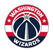

<!DOCTYPE html>
<html>
<meta charset="utf-8" />
<meta http-equiv="X-UA-Compatible" content="IE=edge,chrome=1" />
<meta name="author" content="m.9188.com  ">
<meta name="viewport" content="width=device-width, initial-scale=1.0, maximum-scale=1.0, user-scalable=no" />
<meta name="apple-mobile-web-app-capable" content="yes" />
<meta name="apple-mobile-web-app-status-bar-style" content="black" />
<meta name="format-detection" content="telephone=no" />
<meta name="msapplication-tap-highlight" content="no">
<meta http-equiv="cleartype" content="on">
<link href="css/nba.css" rel="stylesheet">
<script type="text/javascript" src="js/jquery-1.8.3.min.js"></script>
<script type="text/javascript" src="js/index.js"></script>
<title>新赛季NBA常规赛</title>
</html>
<body >
<section class="fixed">
<ul class="tab_ul clearfix">
				<li class="cur"><span>西部</span></li>
				<li><span>东部</span></li>
		</ul>
		<!--西部-->
		<ul class="team_ul clearfix m_top c1" style="padding-bottom:0.5rem;padding-top:0.3rem;">
				<!--1-->
				<li><a class="yongshi">
						<div class="cur"></div>
						<i class="cur"></i></a></li><!--勇士-->
				<li><a class="maci">
						<div></div>
						<i></i></a></li><!--马刺-->
				<li><a class="leiting">
						<div></div>
						<i></i></a></li><!--雷霆-->
				<li><a class="kuaichuan">
						<div></div>
						<i></i></a></li><!--快船-->
				<li><a class="kaituozhe">
						<div></div>
						<i></i></a></li><!--开拓者-->
				<!--2-->
				<li><a class="xiaoniu">
						<div></div>
						<i></i></a></li><!--小牛-->
				<li><a class="huixiong">
						<div></div>
						<i></i></a></li><!--灰熊-->
				<li><a class="huojian">
						<div></div>
						<i></i></a></li><!--火箭-->
				<li><a class="jueshi">
						<div></div>
						<i></i></a></li><!--爵士-->
				<li><a class="guowang">
						<div></div>
						<i></i></a></li><!--国王-->
				<!--3-->
				<li><a class="juejin">
						<div></div>
						<i></i></a></li><!--掘金-->
				<li><a class="tihu">
						<div></div>
						<i></i></a></li><!--鹧鸪-->
				<li><a class="senlin">
						<div></div>
						<i></i></a></li><!--森林狼-->
				<li><a class="taiyang">
						<div></div>
						<i></i></a></li><!--太阳-->
				<li><a class="huren">
						<div></div>
						<i></i></a></li><!--湖人-->
		</ul>
		<!--东部 -->
		<ul class="team_ul clearfix m_top c2" style="display:none;padding-bottom:0.5rem;padding-top:0.3rem;">
				<!--1-->
				<li><a class="qishi">
						<div class="cur"></div>
						<i class="cur"></i></a></li><!--骑士-->
				<li><a class="menglong">
						<div></div>
						<i></i></a></li><!--猛龙-->
				<li><a class="rehuo">
						<div></div>
						<i></i></a></li><!--热火-->
				<li><a class="laoying">
						<div></div>
						<i></i></a></li><!--老鹰-->
				<li><a class="kaier">
						<div></div>
						<i></i></a></li><!--凯尔特人-->
				<!--2-->
				<li><a class="huangfeng">
						<div></div>
						<i></i></a></li><!--黄蜂-->
				<li><a class="buxingzhe">
						<div></div>
						<i></i></a></li><!--步行者-->
				<li><a class="huosai">
						<div></div>
						<i></i></a></li><!--活塞-->
				<li><a class="gongniu">
						<div></div>
						<i></i></a></li><!--公牛-->
				<li><a class="qicai">
						<div></div>
						<i></i></a></li><!--奇才-->
				<!--3-->
				<li><a class="moshu">
						<div></div>
						<i></i></a></li><!--魔术-->
				<li><a class="xionglu">
						<div></div>
						<i></i></a></li><!--雄鹿-->
				<li><a class="lanwang">
						<div></div>
						<i></i></a></li><!--篮网-->
				<li><a class="nike">
						<div></div>
						<i></i></a></li><!--尼克斯-->
				<li><a class="ren76">
						<div></div>
						<i></i></a></li><!--76人-->
		</ul>
</section>
<section class="div_h"></section>
<div class="wrap">

		<!--西部-->
		<div class="west_div"> 
				<!--勇士-->
				<div id="yongshi" class="team_info">
						<p class="title_p">勇士 上赛季常规赛73胜9负</p>
						<p>勇士---新赛季勇士可以说是众矢之的，每个球队都会针对他们进行布阵。其实这支球队目前来说阵容上只有一个缺点，就是护框能力。球队连续失去了最好的两个护框手，补充的帕楚利亚是顶防一段时间还不错，但完全无法护框的地板流内线。球队必须要在外线和中距离把对手完全限制死，一旦对手有机会杀入篮下终结，球队将毫无办法。但好在勇士账面上还真是仅有的几只可能做到把对手限制在三秒区以外的球队，球队外线防守高手不少，杜兰特和格林又是上赛季内线协防最优秀的两个侧翼球员。总而言之，杜兰特来了，虽然勇士失去了几个不错的角色球员，但是新赛季还没开打他们就已经没有退路，目标只有总冠军。</p>
						<p>重要引进 重要引进：凯文-杜兰特（2年5430万，转自雷霆），扎扎-帕楚里亚（1年290万，转自小牛），大卫-韦斯特（1年155万，转自马刺）</p>
						<p>重要流失：哈里森-巴恩斯（4年9400万加盟小牛），安德鲁-博格特（交易至小牛）布兰登-拉什（1年350万加盟森林狼），费斯图斯-艾泽利（2年1600万加盟开拓者），莱昂德罗-巴博萨（2年800万加盟太阳），马利斯-斯贝茨（一年底薪加盟快船）</p>
				</div>
				<!--马刺-->
				<div id="maci" class="team_info">
						<p class="title_p">马刺 上赛季常规赛67胜15负</p>
						<p>新赛季，马刺肯定还是要争冠的，他们会重回巨星模式，用双德带动一群优质球员打球。加索尔、阿德、卡哇伊、格林、帕克的主力阵容，全联盟除了勇士其他对手很难和其对抗。替补席上随时还有吉诺比利，米尔斯，安德森等人随时驰援，球队虽然折了邓肯防守下滑是可以遇见的。但核心阵容的天赋和波波的调教我依然觉得马刺的进攻防守都会稳定在联盟前5。马刺就像是一个冠军的试金石，他的超级球星是文艺技术流，不是运动能力变态的怪兽。但强就强在整个队伍攻防稳定，抓对手弱点极其致命。新赛季各个球队都可以在马刺身上试一试自己的弱点在哪，能否藏起来，不然等真到季后赛面对他们时，不像上赛季雷霆那般突然开窍，是真没得打。</p>
						<p>重要引进：保罗-加索尔（2年超3000万，转自公牛），马努-吉诺比利（1年合同续约），大卫-李（2年320万，转自小牛）</p>
						<p>重要流失：大卫-韦斯特（1年129万加盟勇士），鲍里斯-迪奥（交易至爵士），蒂姆-邓肯（退役）</p>
				</div>
				<!--雷霆-->
				<div id="leiting" class="team_info">
						<p class="title_p">雷霆 上赛季常规赛55胜27负</p>
						<p>新赛季，球队肯定是主打威少加双塔的。只要防守篮板稍弱的队，会被他们的2次进攻刷爆，而且雷霆双塔是有持球主攻的能力的。坎特在篮下各种反手上篮堪称一绝，亚当斯的小抛投也越来越准。威少作为全NBA体能最劲爆的超人，开发进攻机会的能力联盟无人能及，他的传球也越来越能带动队友。想想对面要在场上不时面对胡子兄弟和威少的冲击就够累了。奥拉迪波的投篮虽缺乏稳定性，但持球挂挡拆后冲击篮下的能力并不比威少差多少。球队后场有两个体能超人对面是很痛苦的。球队的替补阵容其实比上赛季还有了补强，伊利亚索瓦和萨博尼斯的组合也值得让人期待。因此球队虽然损失了杜兰特，但在进攻端的损失并不致命，可球队在没有杜兰特后，缺乏了以前的腰位协防者，防守端很可能脱节崩盘。一切看威少如何逆天改命了。</p>
						<p>重要引进：维克托-奥拉迪波（交易自魔术），厄尔森-伊尔亚索瓦（交易自魔术）</p>
						<p>重要流失：塞尔吉-伊巴卡（交易至魔术），凯文-杜兰特（2年5430万加盟勇士），兰迪-弗耶（合同细节未公布加盟篮网）</p>
				</div>
				<!--快船-->
				<div id="kuaichuan" class="team_info">
						<p class="title_p">快船 上赛季常规赛53胜29负</p>
						<p>休赛期，球队空间有限，肯定无法留住上赛季大爆发的白阿德。好在球队在淘了斯佩茨和巴斯顶上，球队的内线替补不至于没有轮换球员。新来的安德森是一个对抗不错的侧翼，有助于提升球队侧翼深度，费尔顿也能利用经验分担克劳福德的替补席持球重任。新赛季球队肯定是要以进西决为目标的，作为21世纪以来唯二没进过西决的球队，他们真的对不起他们豪华的阵容。球队在今年常规赛其实只需要做两件事，一解决保罗和队友的联系被隔离后该怎么打？二解决替补席依赖克劳福德的顽疾。这两个问题是决定球队季后赛上限的基础。但哪怕这两点解决好了，球队也很难在一个系列赛中战胜勇马中的一个，毕竟，侧翼天赋是很难弥补的实情。</p>
						<p>重要引进：贾马尔-克劳福德（3年4200万续约），韦斯利-约翰逊（3年1800万续约），奥斯汀-里弗斯（3年3500万续约），巴莫特（2年450万续约），马利斯-斯贝茨（一年底薪），雷蒙德-菲尔顿（1年底薪，转自小牛）</p>
						<p>重要流失：科尔-阿尔德里奇（3年2200万加盟森林狼），杰夫-格林（1年1500万加盟魔术），巴勃罗-普里吉奥尼（2年底薪加盟火箭）</p>
				</div>
				<!--开拓者-->
				<div id="kaituozhe" class="team_info">
						<p class="title_p">开拓者 上赛季常规赛44胜38负</p>
						<p>作为联盟中平均年龄第二轻的球队（仅高于76人），开拓者队新赛季的表现仍有望随着球员自身的成长、比赛经验的累积，而在原有基础上进一步提升。不过，这种提升恐怕不足以弥补他们和西部精英球队之间的差距：除了勇士、马刺、快船这传统三强仍然难以撼动，包括爵士、灰熊、火箭，都会在积分榜上对他们形成强有力的冲击。开拓者的优势依然在于他们的外线火力，至于缺陷，也很明显：开拓者后场双枪防守能力稀松平常。尤其是利拉德，在防守对方突破时总是被轻松过掉，让身后的梅森-普拉姆利面临艰巨考验。如果艾泽利能够保持健康，那么还好，否则的话，他们的篮筐还是会经常失守。</p>
						<p>重要流失：杰拉德-亨德森（2年1800万签约76人）</p>
						<p>重要引进：埃文-特纳（4年7000万，签自凯尔特人），费斯图斯-艾泽利（2年1600万），CJ-迈克科伦姆（续约4年1.06亿），阿伦-克拉比（续约4年7500万），莫里斯-哈克莱斯（续约4年4200万），迈尔斯-莱昂纳德（续约4年4100万）。</p>
				</div>
				<!--小牛-->
				<div id="xiaoniu" class="team_info">
						<p class="title_p">小牛 上赛季常规赛42胜40负</p>
						<p>小牛近年一直在卓有成效地完成B计划。有了去年遭业界看低却奋起打脸的先例，纵然今夏仍被看低，但谁也无法将他们从季后赛角逐者中划去。但也因为一直未能如愿执行A计划，小牛本季仍被一个问题困扰：缺乏可独当一面的得分领袖。巴恩斯能顺利接班固然很好，若小牛到头来仍得依靠年事已高的德克，不但又浪费了一年，明夏也难以提升对大牌自由人的吸引力。勇士2将的加盟势必会给小牛的防守带来升级，长于传球的博古特和德克的内线呼应，以及全能巴恩斯在侧翼的策应也都是看点。此外，老将尚能饭否，年轻人进步幅度如何，也会影响小牛打硬仗的水平。</p>
						<p>重要流失：钱德勒-帕森斯（灰熊）、雷蒙德-费尔顿（快船）、大卫-李（马刺）、扎扎-帕楚里亚（勇士）</p>
						<p>重要引进：哈里森-巴恩斯（4年9400万）、安德鲁-博古特（交易，2年3600万）、赛斯-库里（年薪95万）、德克-诺维茨基（续约，2年5000万）、德怀特-鲍威尔（续约，4年3700万）、德隆-威廉姆斯（续约，1年1000万）、昆西-埃希（2年223万）</p>
				</div>
				<!--灰熊 -->
				<div id="huixiong" class="team_info">
						<p class="title_p">灰熊 上赛季常规赛42胜40负</p>
						<p>新帅菲兹戴尔在帕特-莱利身边浸淫日久，和球员打交道，以及培养新人是其所长。有报道称，休赛期从签下帕森斯到选秀，菲兹戴尔均有参与，初步符合了灰熊选帅的初衷。在菲兹戴尔离开后，德维恩-韦德和克里斯-波什均表示出不舍，可以想见灰熊下赛季会出现将相和的局面。</p>
						<p>新帅对新赛季也有了初步构想，他透露会倚重康利、小加索尔、兰多夫和帕森斯4核心。另外下赛季作为灰熊碾压型球风代表的托尼-阿伦和兰多夫都将进入合同年，3名2000万先生会否锁死此二人的续约前景，值得一看。如果二人离开，我们熟悉的灰熊可能改头换面。总之，一个无法抹杀的事实是，上赛季在小加索尔倒下前，灰熊稳居西区前5，最终也保住第7。新赛季，进可谋前4，退可保前6，是灰熊应有的格局。</p>
						<p>重要流失：马特-巴恩斯（国王）、兰斯-史蒂芬森（鹈鹕）、乔丹-法马尔（国王）</p>
						<p>重要引进：迈克-康利（续约，5年1.58亿）、钱德勒-帕森斯（4年9444万）、特洛伊-丹尼尔斯（先签后换，3年1000万）、詹姆斯-恩尼斯（续约，2年593万）</p>
				</div>
				<!--火箭 -->
				<div id="huojian" class="team_info">
						<p class="title_p">火箭 上赛季常规赛41胜41负</p>
						<p>德安东尼的到来引人瞩目，业界看好他和哈登的合作，过往成功的履历和独树一帜的打法，也使他具备增强火箭对自由球员吸引力的可能。新赛季的火箭，兵源充足，多数球员皆有闪光点，内部有挖潜可能，以及哈登和德安东尼，都堪称优势，除此之外火箭也有不少X因素，德安东尼治下球队强调精确制导传球，火箭则难免始于哈登终于哈登，其中侧翼薄弱，无法起到串联作用将成为德安东尼战术施行的桎梏。这也为鲁迪-盖伊可能加盟，以及莫泰可能的留队埋下伏笔。毕竟盖伊相比特雷沃-阿里扎和科里-布鲁尔而言是升级，莫泰的低位进攻和策应，也是后魔兽时代火箭内线所稀缺的。 新赛季打入季后赛是最起码的要求，能否打出观赏性和高期望，则决定着火箭明夏的成败。</p>
						<p>重要流失：德怀特-霍华德（老鹰）、泰伦斯-琼斯（鹈鹕）、迈克尔-比斯利（交易，送往雄鹿）、杰森-特里（雄鹿）、多纳塔斯-莫泰尤纳斯（自由球员）</p>
						<p>重要引进：哈登（续约，4年1.18亿）、莱恩-安德森（4年8000万）、埃里克-戈登（4年5289万）、内内（1年290万）、巴勃罗-普里吉奥尼（2年223万）、泰勒-恩尼斯（交易，年薪173万）、齐纳努-奥纳库（37顺位，3年250万）、周琦（43顺位，今年不签约）</p>
				</div>
				<!--爵士 -->
				<div id="jueshi" class="team_info">
						<p class="title_p">爵士 上赛季常规赛40胜42负</p>
						<p>上赛季主力球员的伤病给了年轻人更多的成长空间。新赛季，随着伤员们的纷纷回归，加上茁壮成长的新人，以及引进的三名老将，爵士队不仅年龄结构合理，而且阵容深度变得十分惊人！希尔、约翰逊、迪奥，三名球员显然都不是球队的长期选择，不过他们却能为队中的年轻球员带来经验和领导力，而且三名球员都有丰富的季后赛甚至总决赛经历，这对本身已经具备相当实力但年龄结构相对年轻，并且想要立即要成绩的爵士来说，可以说是极有针对性的补强。今年26岁的海沃德以及24岁的戈伯特都将迎来潜在的合同年，于公于私，他们都会竭尽所能，提升个人和球队的表现。在军纪严明的主教练奎因-斯奈德执掌之下，这支队伍不仅具备了冲击分区前八的实力，甚至有可能成为新赛季联盟的黑马！</p>
						<p>重要流失：特雷沃-布克（2年1850万签约篮网），特雷-伯克（交易至奇才）</p>
						<p>重要引进：乔-约翰逊（2年2200万，转自热火），伯瑞斯-迪奥（交易自马刺），乔治-希尔（交易自步行者）</p>
				</div>
				<!--国王 -->
				<div id="guowang" class="team_info">
						<p class="title_p">国王 上赛季常规赛40胜42负 </p>
						<p>重要流失：拉简-隆多（2年2800万加盟公牛），卡隆-巴特勒（被裁），塞斯-库里（2年600万加盟小牛），昆西-阿西（2年底薪签小牛），马科-贝里内利（交易到黄蜂）</p>
						<p>重要引进：泰-劳森（一年期非保障合同），安东尼-托利弗（2年1600万），马特-巴恩斯（2年1200万，转自灰熊），阿隆-阿弗拉罗（2年2500万，转自尼克斯）</p>
						<p>可以肯定，国王在乔格尔的带领下，只要不出大的问题，就一定能有比较明显的改观。毕竟，如今国王的大梁没动，考辛斯、盖伊、麦克勒莫、考利-斯坦、卡斯比都还在，只要理顺关系，建设战术体系，全队团结一致，国王不是没救。</p>
						<p>大的问题是考神生涯一共7个赛季，换了6任主帅，可谓是NBA第一教练杀手。如果乔格尔能用人格魅力感化考神，那么国王杀进季后赛都不是问题。如果考辛斯和乔格尔不睦，那么一切可能都会崩盘——麦克勒莫成长不够快，阿弗拉罗已经逐渐老迈，巴恩斯与托利弗等人也不是扭转局面的材料。总而言之，国王兴衰的千钧重担，就系在考辛斯与乔格尔的关系这根头发上。</p>
				</div>
				<!--掘金 -->
				<div id="juejin" class="team_info">
						<p class="title_p">掘金 上赛季常规赛33胜39负 </p>
						<p>法里埃德、加里纳利，包括上赛季因伤一场没打的威尔森-钱德勒，即便能够保持健康，也不具备真正的领袖气质，而其他的年轻人虽然前景诱人，但还远不到收获的季节。虽然拥有可以采取10人轮换的深厚阵容，但从韦德选择公牛那一天起，掘金的目标就已经完全明确——继续把机会和时间留给这一群年轻人，耐心等待他们的成长，同时品尝这过程中的苦涩。从2012-13赛季首轮被勇士淘汰出局以来连续三年无缘季后赛的掘金，仍然得继续努力累积天赋和经验，怀揣着对未来的希望，摸索着前进。和上赛季的33胜相比，新赛季掘金有希望提升自己的战绩，但如果打不进季后赛，最终换来的，可能还是高不成低不就的尴尬。</p>
						<p>重要流失：DJ-奥古斯丁（4年2900万签约魔术）</p>
						<p>重要引进：贾马尔-穆雷（选秀第7顺位）</p>
				</div>
				<!--鹈鹕 -->
				<div id="tihu" class="team_info">
						<p class="title_p">鹈鹕 上赛季常规赛30胜52负</p>
						<p>业界用一句话来总结鹈鹕引援：说不上多好，但至少开启了纠错模式。不过虽然休赛期鹈鹕请走了戈登和安德森，将有限的薪资空间分散在诸多角色球员身上，但鹈鹕仍有不确定因素。埃文斯能否出战尚不可知，随后又传出霍勒迪要照顾患病妻子，可能在赛季初缺席的消息。史蒂芬森的加盟恰如其时，他可以提供鹈鹕急需的组织，但考虑到他近几年不算成功的履历，以及他的打球态度，以及与当今NBA流行球风不太兼容的打法（和弗兰克-沃格尔和戴夫-乔格尔的合作表明，他貌似更适合作为慢节奏防守战中的持球者），鹈鹕对其的使用要颇费思量。新赛季鹈鹕的最大的任务是在戴维斯信心崩盘前尽力挽留，但戴维斯的大好年华可能又会被浪费一年。总的来说，业界均认为鹈鹕有所作为，要等到明年休赛期。 </p>
						<p>流失：埃里克-戈登、莱恩-安德森（火箭）</p>
						<p>引进：所罗门-希尔（4年4800万）、埃特万-摩尔（4年3400万）、泰伦斯-琼斯（1年105万）、兰斯-史蒂芬森（1年122万，10万受保障）、巴迪-希尔德（选秀6顺位，4年1589万）</p>
				</div>
				<!--森林狼 -->
				<div id="senlin" class="team_info">
						<p class="title_p">森林狼 上赛季常规赛29胜53负 </p>
						<p>重要流失：凯文-加内特（退役），泰肖恩-普林斯（自由球员）</p>
						<p>重要引进：克里斯-邓恩（选秀第5顺位）、科尔-阿尔德里奇（3年2200万，转自快船），乔丹-希尔（2年800万，转自步行者），布兰登-拉什（1年350万，转自勇士）</p>
						<p>对于一支像森林狼这样年轻的球队来说，你必须得给他们足够的耐心。但锡伯杜显然不想再等了，他希望球队马上就出成绩。退一步说，森林狼正经历着建设一支球队过程中最幸福的阶段：在这支球队当中，所有核心成员都还身处新秀合同当中。虽然两三年后，他们就将相继面临续约问题，但起码在那之前，球队还可以从容地观察他们，以决定谁值得培养，而谁更适合作为交易筹码发挥价值。</p>
						<p>所以，即便森林狼本赛季无法打进季后赛（这种可能非常的大，毕竟西部虎踞龙盘），球队也完全承受得起。而这个过程，才是最重要的，赢球当然值得高兴，但哪怕没有获得期待中的胜场数，只要通过一场场比赛获得宝贵的经验，培养起正确的比赛习惯，那么这个赛季也一样可以被认为是成功的。</p>
				</div>
				<!--太阳 -->
				<div id="taiyang" class="team_info">
						<p class="title_p">太阳 上赛季常规赛23胜59负</p>
						<p>太阳---太阳的处境其实比尼克斯、篮网好很多，太阳战绩虽差，但是基本走在重建的正确道路上。目前全队拥有德文-布克、本德尔、克里斯和尤里斯三员不足20岁的小将，而布兰顿-奈特和布雷德索也都不超过27岁，奈特和布雷德索都有很大的交易价值，太阳可谓是进可攻退可守——打得好，可以一起前进，打不好，也可以交易布雷德索和奈特，换取其他的筹码。总体来看，太阳的阵容搭配合理，典型的老带新格局，老将不弱，新人有天赋，但问题在于他们缺乏真正的明星球员。这套阵容可以让他们顺利成长，但是短期内还不足以改变他们的命运，杀进季后赛基本是无法达成的目标，或许打出快乐篮球、漂亮篮球才是太阳的追求</p>
						<p>重要流失：琼-鲁埃尔（4年4200万加盟活塞），米尔扎-泰利托维奇（3年3000万加盟雄鹿）</p>
						<p>重要引进：贾里德-达德利（3年3000万，转自奇才），莱昂德罗-巴博萨（2年800万，转自勇士）、德拉甘-本德尔（克罗地亚，选秀4顺位），马奎斯-克里斯（选秀8顺位）</p>
				</div>
				<!--湖人 -->
				<div id="huren" class="team_info">
						<p class="title_p">湖人 上赛季常规赛17胜65负</p>
						<p>湖人管理层对于球队的态度应该还是处于没有战绩要求的缓冲期。首先，湖人本赛季的选秀权留不住，那么战绩打成什么样，都无所谓。其次，湖人的年轻球员也需要磨练，拉塞尔、克拉克森、英格拉姆、兰德尔、小南斯这湖人五少能否磨合默契，还需要时间检验。第三，小沃顿也与球队有磨合的诉求，他从金州勇士学来的战术体系，能否在湖人成功移植，实在令人捏一把汗，毕竟湖人的三分球太差了，位列联盟垫底，而勇士则是全联盟三分球能力最出色的球队。没有三分球拉空间，沃顿该怎么用五小阵容呢？</p>
						<p>重要流失：罗伊-希伯特（1年500万加盟黄蜂），布兰顿-巴斯（1年期老将底薪加盟快船），科比-布莱恩特（退役）</p>
						<p>重要引进：鲁尔-邓（4年7200万，转自热火），蒂莫菲-莫兹戈夫（4年6400万，转自骑士），塔勒克-布莱克（2年1285万续约），何塞-卡尔德隆（交易自公牛）、布兰顿-英格拉姆（榜眼秀）</p>
				</div>
		</div>
		<!--西部 end-->
		<!--东部-->
		<div class="east_div" style="display:none;"> 
				<!--骑士-->
				<div id="qishi" class="team_info">
						<p class="title_p">骑士 上赛季常规赛57胜25负</p>
						<p>除了薪水关系离队的德拉维多瓦和莫兹戈夫之外，骑士基本保留了核心阵容，新赛季球队的目标依然是卫冕，但这卫冕之路说来容易其实也很麻烦，对面勇马并没有削弱，自己的核心又老了一岁。好在东部的对手虽然补强了，但还是没有任何一支球队能威胁到骑士，而且骑士引进了邓利维和安德森，邓利维虽然慢，但好歹球商出众，球队肯定是希望他能仗着他的球商串联起第二阵容的，安德森在骑士季后赛扶正TT弱化了莫兹戈夫之后的这种体系中能基本弥补莫兹戈夫的作用。新赛季骑士只要延续上赛季的节奏，让全员健康的状态进入季后赛，依然是总冠军热门球队之一。詹姆斯的历史地位如何，让我们一起来见证。</p>
						<p>重要引进：迈克-邓利维（交易自公牛），克里斯-安德森（转自灰熊）</p>
						<p>重要流失：蒂莫菲-莫兹戈夫（4年6400万加盟湖人），德拉维多瓦（4年3850万签雄鹿）</p>
				</div>
				<!--猛龙-->
				<div id="menglong" class="team_info">
						<p class="title_p">猛龙 上赛季常规赛56胜26负</p>
						<p>新赛季，球队希望的是阵容稳定后球队人员的内部挖潜。毕竟上赛季卡罗尔报销了，并没有和全队磨合太长的时间，球队在阵容稳定以后，打出更坚韧的防守与更稳定的进攻下，是有可能进行内部升华的。简单来看，瓦蓝、帕特森、卡罗尔、德罗赞、洛瑞的组合攻守内外均衡，对上联盟绝大部分的球队首发都有优势。真正的三强攻击点。约舍夫、萨林杰、罗斯的第二阵容也有输出有组织。但是这支球队的阵容已经是上限了，除非出现今年这种空间大幅度增加，不然球队阵容未来几年都是这个样子了。这个阵容对于一支要争冠的球队，貌似还是有点单薄，充其量他们只是一个能给骑士制造点麻烦的球队。</p>
						<p>重要引进：德马尔-德罗赞（5年1.39亿续约），贾里德-萨林杰（1年600万，转自凯尔特人）</p>
						<p>重要流失：俾斯麦-比永博（4年7200万加盟魔术），詹姆斯-约翰逊（1年400万加盟热火），路易斯-斯科拉（1年合同加盟篮网）</p>
				</div>
				<!--热火-->
				<div id="rehuo" class="team_info">
						<p class="title_p">热火 上赛季常规赛48胜34负</p>
						<p>韦德的出走无疑是迈阿密的一场地震。作为在队13年的核心和精神领袖，韦德离开迈阿密引发外界对于热火管理层的改观，进而影响到明夏的运作，估计是比战力损失更为显著的。除韦德外，邓、约翰逊、格林、小斯和波什等主力也纷纷离开，热火一下子挥别了诸多老将，球队权杖交接的痕迹深刻。热火的补救措施是高薪续约怀特塞德，匹配了泰勒-约翰逊的“毒药合同”，并以1年合同挽留哈斯勒姆，基本保证队内心气不坠，并让更衣室不至于无序。如今的热火和小牛类似，为追逐大牌，队内充斥着打短工的球员。但和德克-诺维茨基始终坚挺不同，热火在失去韦德后，再度失去波什。在波什和迈阿密说再见后，热火战绩和排名出现大幅下滑绝非耸人听闻。</p>
						<p>重要引进：哈森-怀特塞德（4年9800万续约），德里克-威廉姆斯（1年500万，转自尼克斯），詹姆斯-约翰逊（1年400万，转自猛龙），维恩-艾灵顿（2年1200万，转自篮网）</p>
						<p>重要流失：德韦恩-韦德（2年4750万加盟公牛），乔-约翰逊（2年2200万加盟爵士），鲁尔-邓（4年7200万加盟湖人）</p>
				</div>
				<!--老鹰-->
				<div id="laoying" class="team_info">
						<p class="title_p">老鹰 上赛季常规赛48胜34负</p>
						<p>回归家乡后，魔兽难免会被拿来和前任霍福德做对比。对此，施罗德和亨弗里斯都曾公开表示，站桩型的魔兽其防守和篮下杀伤力均强于霍福德，但看在业界眼里却是另一回事。这里牵扯出一个核心问题：老鹰的进攻是否该从由挡拆发起的传导球，向由内而外的传统战术转变。仅从阵容搭配看，在亚特兰大打出生涯代表作的保罗-米尔萨普身手全能，且有外线投射，是契合魔兽的搭档。施罗德冲击能力强，其突破也会为魔兽制造杀机。老鹰在后霍福德时期2大王牌的技术特点都能和魔兽无缝对接，这是该队一大优势。　不管是以魔兽为轴，期待他更多参与挡拆；还是坚持传导球，希望魔兽“偷师”霍福德，多多出现在罚球弧顶和弱侧，老鹰都要冒一定风险，但他们别无选择。</p>
						<p>重要流失：艾尔-霍福德（凯尔特人）、杰夫-蒂格（步行者）、科克-辛里奇（自由球员）</p>
						<p>重要引进：德怀特-霍华德（3年7050万）、肯特-巴泽莫尔（续约，4年7000万）、克里斯-亨弗里斯（续约，1年400万）、贾莱特-杰克（1年155万）、托里安-普林斯（从爵士交易而得，12顺位，4年1075万）</p>
				</div>
				<!--凯尔特人-->
				<div id="kaier" class="team_info">
						<p class="title_p">凯尔特人 上赛季常规赛48胜34负</p>
						<p>凯尔特人现在处于上升期，他们的实力不错，赢球已经成为习惯。本赛季凯尔特人的实力没有下降，反而稍有提升。但是需要注意的是，他们阵中的薪金水平并不科学。球队的当家明星伊塞亚-托马斯年薪只有660万美元，这意味着艾尔-霍福德比托马斯一年多挣2000万，阿米尔-约翰逊是托马斯年薪的两倍，小刺客对此能服气吗？如果能一直赢球，那么薪水不是问题，毕竟小刺客在2018年就能续约了，只要球队一直走上坡路，那么他拿份准顶薪合同不是问题。但是如果球队战绩出现波折，尤其是在伤病情况下出现波折，那么托马斯并不是没有闹情绪的可能。好在大西洋赛区比较羸弱，如果凯尔特人不发生内乱或者伤病，那么以他们的核心阵容加上今年升级的新鲜血液，凯尔特人有机会冲击更出色的战绩。</p>
						<p>重要引进：艾尔-霍福德（4年1.13亿，转自老鹰），杰伦-布朗（新秀签约）</p>
						<p>重要流失：埃文-特纳（4年7000万加盟开拓者），贾里德-萨林杰</p>
				</div>
				<!--黄蜂-->
				<div id="huangfeng" class="team_info">
						<p class="title_p">黄蜂 上赛季常规赛48胜34负 </p>
						<p>业界对主帅史蒂夫-克利福德激活球员第二春的能力佩服得五体投地，巴图姆就是代表。他的投篮和策应，是黄蜂上赛季取得佳绩的重要因素，唯一不足是因球权增加导致失误过多，但在最擅控制失误的黄蜂被掩盖了。黄蜂上赛季思路明确，全队除肯巴-沃克、巴图姆和林书豪外，多为无球型球员。尽管无巨星压阵，但黄蜂阵容深度够，对抗伤病能力强，且球员功能性突出，使多种阵容搭配成为可能。休赛期引援后，黄蜂保持了这些特性，理想状态下，从希伯特、马文到迈基吉，黄蜂可构筑起立体防线，攻防两端能保持延续性实属难得。说到底，黄蜂可用之兵众多，战绩出现滑坡可能性不大。</p>
						<p>重要引进：尼古拉斯-巴图姆（5年1.2亿续约），马文-威廉姆斯（4年5450万续约），雷蒙-塞申斯（2年1230万转自奇才）</p>
						<p>重要流失：林书豪（3年3600万加盟篮网），艾尔-杰弗森（3年3000万加盟步行者），考特尼-李（4年5000万加盟尼克斯）</p>
				</div>
				<!--步行者-->
				<div id="buxingzhe" class="team_info">
						<p class="title_p">步行者 上赛季常规赛45胜37负</p>
						<p>步行者队最大的优势当然还是保罗-乔治，和上赛季不同的是，如今伯德为步行者配置了更多可以倚重的老将，既增加了阵容的深度，也保证了打法的多样性，乔治可以尽情肆放他在攻守两端的才华。</p>
						<p>虽然说伯德的建队思路就是以攻代守，但如果真的失去了防守，你进攻端就必须要比对方得更多的分才行，某种程度上也增加了对进攻的要求，但稳定投射能力的欠缺，却是他们打出高效进攻的最大制约。蒂格上赛季投出40%的三分球命中率，但就整个职业生涯来看，并不能算是一名出色的射手，而杨虽然曾经打过三号位，但整个职业生涯三分球命中率只有31.9%。防守端，内线特纳虽然封盖数据漂亮，但还得学会如何在不轻易起跳的情况下守护好篮筐，因为除了他之外，球队实在没有另外一个人值得指望了。</p>
						<p>重要引进：杰夫-蒂格（交易自老鹰），艾尔-杰弗森（3年3000万，转自黄蜂），萨迪斯-杨（交易自篮网）杰里米-埃文斯（交易自小牛）</p>
						<p>重要流失：所罗门-希尔（4年5200万加盟鹈鹕），伊恩-马辛米（4年6400万加盟奇才），乔治-希尔（交易至爵士），乔丹-希尔（2年800万加盟森林狼）</p>
				</div>
				<!--活塞-->
				<div id="huosai" class="team_info">
						<p class="title_p">活塞 上赛季常规赛44胜38负</p>
						<p>这是一支明显处于上升期的队伍，教练聪明，球员听话，运动天赋出色同时作风强硬，拥有全联盟最顶级的篮板球能力——虽然和华丽两个字不沾边，但与整座城市的蓝领气质极其相符，是任何对手都不敢小觑的一股势力。</p>
						<p>如果要说弱点，那就是这支球队的星味不足：除了德拉蒙德之外，其他每个位置上的球员恐怕都不具备联盟前十的实力。</p>
						<p>另外，这支球队的投射能力有所欠缺，这也是大范甘迪坚持打慢节奏比赛，同时不断堆砌内线力量的原因之一。</p>
						<p>最后，雷吉的膝伤虽然不需要手术，但有消息称球队已经做好了交易他的准备，说明伤情还是比较麻烦。史密斯临时顶缸勉强可以，但作为长期选择就是灾难了，所以活塞本赛季最终能走到哪里，还得看雷吉的恢复情况如何。</p>
						<p>重要引进：琼-鲁埃尔（4年4200万，转自太阳），安德烈-德拉蒙德（5年1.3亿续约），伊斯梅尔-史密斯（3年1800万，转自76人）</p>
						<p>重要流失：约迪-米克斯（交易至魔术）</p>
				</div>
				<!--公牛-->
				<div id="gongniu" class="team_info">
						<p class="title_p">公牛 上赛季常规赛42胜40负 </p>
						<p>几乎换掉了半支球队的公牛，优缺点都同样明显。优点就是他们的明星效应要比以往更出色。韦德和巴特勒组成的侧翼，即便有潜在的兼容性问题，得分能力仍然令人放心。另外，虽然这支球队极度缺乏外线投射能力，但队中最好的两位射手尼科拉-米罗蒂奇和道格-麦克德莫特都还年轻，几乎肯定会继续飞速成长。当然，缺陷也是客观存在的：除了外线投射能力不足以及随之而来空间问题（包括球权分配问题），这支球队在后场的深度也严重不足。而在前场，洛佩斯、吉布森、米罗蒂奇、波蒂斯四名球员没有一个人能够提供稳定的低位攻击火力，唯一能帮忙拉开空间的米罗蒂奇，防守端又是一个漏洞。总而言之，新公牛看上去挺美，但问题多多，需要一位睿智的、经验丰富的教练来一一解决。可惜的是，霍伊博格似乎并不符合这样的条件。</p>
						<p>重要流失：德里克-罗斯（交易至尼克斯），保罗-加索尔（2年3000万签约马刺），乔金-诺阿（4年7200万签约尼克斯），阿隆-布鲁克斯（1年250万签约步行者），迈克-邓利维（交易至骑士），埃托万-摩尔（4年3400万签约鹈鹕），贾斯汀-霍勒迪（交易至尼克斯）</p>
						<p>重要引进：德维恩-韦德（2年4750万，签自热火），拉简-隆多（2年2800万，签自国王），罗宾-洛佩斯（交易自尼克斯），伊赛亚-坎南（2年220万，签自76人）</p>
				</div>
				<!--奇才-->
				<div id="qicai" class="team_info">
						<p class="title_p">奇才 上赛季常规赛41胜41负 </p>
						<p>新赛季比尔和沃尔要比肩水花兄弟，还得看比尔能否拿出配得上亿元合同的表现。投篮是其保障，但若奇才仍需谨慎控制他的出场时间，不仅这套组合威力无法完全体现，彼此之间更可能产生裂痕，这是相对健康外，最令奇才担忧的。布鲁克斯走马上任，新帅必然带来新气象，重返季后赛是目标。不过在业界看来，奇才通过今夏运作，维持战力不辍便是成功，对战绩的提升幅度未必会如纸面上看来那么大。而最令人担忧的，是这支奇才的上限可能就是如此了。环顾东区，骑士、猛龙、凯尔特人和老鹰恒强，奇才就是想把黄蜂、步行者、活塞3支前8球队拉下马都难言成功，更别提今夏引援力度更大的公牛、尼克斯，以及进步幅度可期的魔术。季后赛对华府来说可能仍是镜花水月。</p>
						<p>重要流失：内内（火箭）、贾里德-杜德利（太阳）、加雷特-坦普尔（国王）、J.J希克森（CBA）、拉蒙-塞申斯（黄蜂）、德鲁-古登（自由球员）</p>
						<p>重要引进：比尔（续约，5年1.28亿）、伊安-马辛米（4年6400万）、安德鲁-尼科尔森（4年2600万）、杰森-史密斯（3年1600万）、马库斯-索顿（1年132万）、特雷-伯克（交易，年薪339万）</p>
				</div>
				<!--魔术-->
				<div id="moshu" class="team_info">
						<p class="title_p">魔术 上赛季常规赛35胜47负 </p>
						<p>接手魔术后，沃格尔欣喜地表示“从未执教过如此多才多艺的球队”，此语点中了魔术的最大优势，却也凸显出魔术缺乏领军人物的不足。伊巴卡作为更衣室老大，其话语权将达生涯巅峰，但在场上谁执牛耳？是投篮不稳定的埃尔弗里德-佩顿？还是战术地位有边缘化危险的武切维奇？还是可能被沃格尔授以最后一投重任的福尼耶？抑或是将首次出任先发三号位的戈登？有人戏言沃格尔才是魔术今夏最大引援，考虑到魔术上赛季在斯科特-斯凯尔斯治下将帅失和的混乱局面，此言不虚。充沛的兵源将使沃格尔可以在“五大”和“五小”之间自如切换，调教年轻人更是其所长。</p>
						<p>仅从阵容配置看，休赛期已有下季进步最快球队，只看“西狼东魔”的说法。从以往看，类似魔术这样的年轻球队冲劲十足，但他们圆梦季后赛可能还要等待一年。</p>
						<p>重要流失：厄尔森-伊尔亚索瓦、维克托-奥拉迪波、多曼塔斯-萨博尼斯（雷霆）、布兰顿-詹宁斯（尼克斯）</p>
						<p>重要引进：塞尔吉-伊巴卡（交易，年薪1225万）、俾斯麦-比永博（4年7200万）、D.J。-奥古斯丁（4年2900万）、杰夫-格林（1年1500万）、埃文-福尼耶（续约，5年8500万）</p>
				</div>
				<!--雄鹿-->
				<div id="xionglu" class="team_info">
						<p class="title_p">雄鹿 上赛季常规赛33胜49负 </p>
						<p>人算不如天算，球队上赛季表现最好的三名球员之一——克里斯-米德尔顿，在训练营刚刚开始，季前赛还一场没打的情况下，就倒霉地踩在一块湿滑的地板上，造成左腿筋撕裂的严重伤势，一歇就将是6个月。失去这至关重要的一大支点，让雄鹿队的新赛季征程，一下子从普通难度升级为噩梦难度。</p>
						<p>雄鹿队想要交易门罗，这已经不是什么秘密了，本来他们并不急于这么做，但米德尔顿一伤，管理层压力骤增。已经有消息称，他们有意用门罗去跟黄蜂交易年轻后卫杰里米-兰姆。兰姆当然是一名有天赋的外线攻击手，去年夏天续签的那份三年2100万美元的合同在如今的市场行情下也算物美价廉，然而雄鹿要想补上米德尔顿的空缺，成功实现重返季后赛的目标，恐怕门罗这块重要筹码，还得得到更加充分的利用才行。</p>
						<p>重要流失：杰里-贝勒斯（3年2700万签约76人），，OJ-梅奥（自由球员），格雷维斯-瓦斯奎斯（1年660万签约篮网）</p>
						<p>重要引进：米尔扎-泰勒托维奇（3年3000万，转自太阳），杰森-特里（老将底薪，转自火箭），马修-德拉维多瓦（4年3850万，先签后换自骑士）、索恩-马克（选秀首轮第10顺位）</p>
				</div>
				<!--尼克斯-->
				<div id="nike" class="team_info">
						<p class="title_p">尼克斯 上赛季常规赛32胜50负</p>
						<p>尼克斯的补强钱没少花，但是效果很一般。罗斯的真实贡献值排在联盟第438位，几乎从MVP跌成了边缘人。大伤过后，罗斯昔日赖以成名的爆发力已经所剩无几，很少在突进内线博取罚球和得分，但是他的三分球能力也没有及时提高，现在的罗斯已经不再是联盟一线球员了。</p>
						<p>除了罗斯外，诺阿和詹宁斯的表现也很难说，这两人都遭遇了大伤，能否恢复并不确定。至于库特尼-李、贾斯汀-霍乐迪等人，他们有战力，但是并不多。</p>
						<p>从纸面上说，尼克斯可以排出罗斯，库特尼-李，甜瓜，波尔津吉斯，诺阿的先发阵容，替补席上还坐着几个海外球员和詹宁斯，一眼扫去，似乎还不错。如果罗斯和诺阿重新崛起，那么尼克斯杀进东区前六并不是没有希望。</p>
						<p>重要流失：阿隆-阿弗拉罗（2年2500万加盟国王），何塞-卡尔德隆（交易至公牛），罗宾-洛佩斯（交易至公牛）德里克-威廉姆斯（1年500万加盟热火）</p>
						<p>重要引进：德里克-罗斯（交易自公牛），贾斯汀-霍乐迪（交易自公牛），乔金-诺阿（4年7200万，转自公牛），考特尼-李（4年5000万，转自黄蜂），布兰顿-詹宁斯（1年500万，转自魔术）</p>
				</div>
				<!--篮网-->
				<div id="lanwang" class="team_info">
						<p class="title_p">篮网 上赛季常规赛21胜61负</p>
						<p>篮网这样的底子，想要追求多么好的战绩是不用奢望了。他们需要先还历史的欠账。好在篮网现在的管理层比较给力，新总经理肖恩-马克斯来自马刺系，新主帅肯尼-阿特金森以前在老鹰和尼克斯等多支球队当过助教，被视为最适合当主帅的助理教练。这两人或许不能在一个赛季内就扭转篮网的局面，但是只要篮网信任这对搭档，他们的未来值得期待。篮网现在要做的是在现有球员的基础上，尽量打出一些竞争性，并通过交易，力求“别针换别墅”。篮网虽然送走了为数不多的好球员赛迪斯-杨，但换来了一个首轮秀，而且留住了实用中锋洛佩斯，只要洛佩斯能保证健康，那么篮网的新赛季还有盼头。</p>
						<p>重要流失：赛迪斯-杨（交易至步行者），贾里特-杰克（1年老将底薪签约老鹰），韦恩-艾灵顿（2年1200万美元，签约热火）</p>
						<p>重要引进：林书豪（3年3600万，转自黄蜂），特雷沃-布克（2年1850万，转自爵士），路易斯-斯科拉（1年合同，转自猛龙），兰迪-弗耶（转自雷霆），安东尼-本内特（2年底薪，自由签约），格雷维斯-瓦斯奎兹（1年期合同签约）</p>
				</div>
				<!--76人-->
				<div id="ren76" class="team_info">
						<p class="title_p">76人 上赛季常规赛10胜72负</p>
						<p>此前有传言称布雷特-布朗可能要下课，但是他却一直稳定在岗位上，看来76人还真是对他寄予厚望。但是话说回来，布朗的性格也适合76人，格雷格-波波维奇曾说过，布朗就像钉子般坚韧。他这种性格的主帅，最适合用来拿来给年轻球队熬鹰。新赛季，76人阵容奢华，他们理论上可以排出西蒙斯、沙里奇、诺埃尔、奥卡福、恩比德的“死亡五大”阵容。客观来说，新赛季的76人绝对值得人们刮目相看。从核心球员的构成来看，他们直接增加了三个有很强竞争力的球员——西蒙斯，恩比德，沙里奇。这三人如果健康的话，能为76人直接解决防守和组织两大问题，甚至能捎带着解决一些外线投篮问题。可以想见，76人绝不会再像上赛季那样，一年只赢10场球。</p>
						<p>流失：伊斯梅尔-史密斯（3年1800万加盟活塞），伊赛亚-坎南（2年220万加盟公牛），卡尔-兰德里（球队买断）</p>
						<p>引进：贾里德-贝勒斯（3年2700万，转自雄鹿），塞尔吉奥-罗德里格斯（1年800万，转自欧洲皇家马德里），杰拉德-亨德森（2年1800万，转自开拓者），本-西蒙斯（澳大利亚，状元）、达里奥-沙里奇（2014年第12顺位，今年签约）</p>
				</div>
				
		</div>
		<!--东部 end-->
</div>


</body>
<script type="text/javascript">
	$('.m_top li').click(function(){
		var a = $(this).find('a');
		var cl = a.attr('class');
		var t = $('#'+cl);
		var t2 = t.offset().top;
		var fixed = $('.fixed').height();
		var tot = parseInt(t2) - parseInt(fixed)
		$('body,html').animate({ scrollTop: tot}, 50);
	})
</script>
</html>